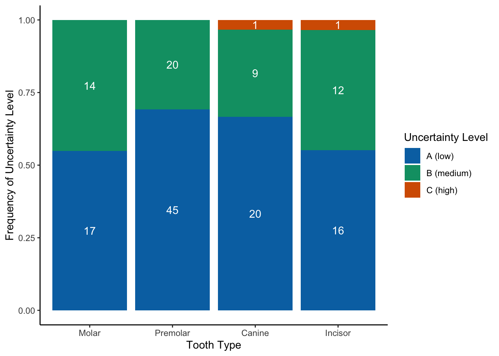
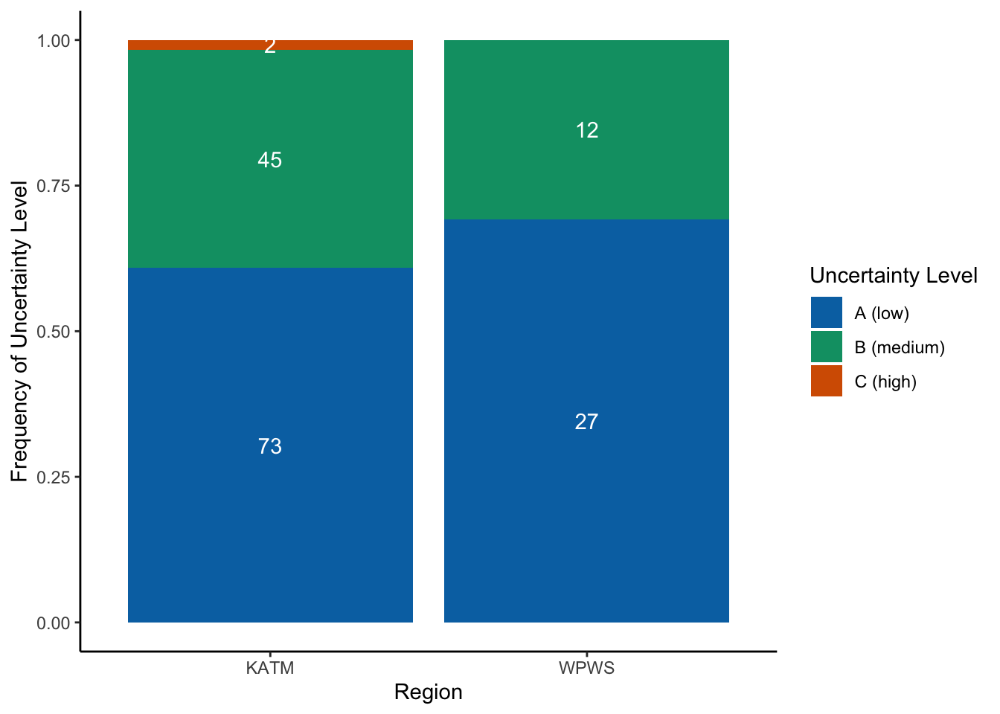

Precision of Northern Sea Otter Aging using Tooth Cementum Annuli Analysis
Introduction
For the last couple years, we have submitted multiple teeth from the same individual sea otter carcasses to Matson’s labs to assess precision of aging via cementum annuli analysis. In this document, I outline preliminary results of this exploratory investigation.
We submitted teeth from four general tooth type categories: Molars, Premolars, Canines, Incisors. These teeth originated from two regions: Katmai National Park and Western Prince William Sound.
Sample Size of Aged Teeth by Predictor
Molars
Premolars
Canines
Incisors
31
65
30
29
Katmai National Park
Western Prince William Sound
120
39
2006
2007
2008
2013
2019
2021
2022
2
6
6
6
23
22
94
Data Import and Cleaning
In the following code chunk, I import the raw dataset and undergo several cleaning steps including filtering out unknown tooth types, unsuccessfully aged teeth, and individuals with teeth aged in different years (i.e. recaptures).
Code
################################################ Part 0: Load packages ####################################################################### Load packagespackages<-c("tidyverse", "readxl", "janitor", "lme4", "AICcmodavg", "viridis")pacman::p_load(packages, character.only =TRUE)################################################ Part 1: Load raw dataset ###################################################################SEOT_teeth_raw <-read_excel(here::here("data/raw/SEOT_teeth_raw.xlsx"))################################################ Part 2: Clean and summarize datasets ######################################################## Part 2A: Categorize tooth types (premolars, canines, incisors, molars, or unknown) ----P <-c("P2a","P2b","P2","Pa","Pb","P","UP","LLP2","URP3","URP2","ULP3","ULP2","URP2 or ULP2","P2, additional tooth sent in 2023","LRP2","URP4")C <-c("C","URC","LRC","ULC","ULC (BROKEN)")I <-c("URI3","URI1","I3","ULI3","LLI2","LLI1","LRI2","UI1?","I2","UI2","LRI1")M <-c("M","URM1","LRM1","ULM1","M2")UNK <-c("UNK", "UNKa", "UNKb")# Part 2B: Generate clean, single-tooth dataset ----------------------------------------SEOT_teeth <- SEOT_teeth_raw %>%clean_names()%>%#Remove individuals with no teeth collected and/or no ages calculated due to tooth damagefilter(tooth_collected =="Y", otter_num !="SOD-2021-200", #individual with tooth damage (couldnt be aged) otter_num !="KEFJ-SOD-2014-01",#individual with certainty code missing otter_num !="SOD-2006-17/ capture otter SO-05-04", otter_num !="SOD-2007-02/capture otter SO-01-01", #teeth pulled different years otter_num !="SOD-2007-01/ capture otter SO-04-24", #teeth pulled different years otter_num !="WPWS-SOD-2014-02/ capture otter SO-2010-08"#teeth pulled different years ) %>%#Categorize teeth to broad categoriesmutate(tooth_category =#categorize all unknown teeth as "UNK" case_when(tooth %in% UNK ~"UNK", tooth %in% C ~"C", tooth %in% P ~"P", tooth %in% I ~"I", tooth %in% M ~"M")) %>%#keep only relevant columnsselect(year, collection_date, otter_id = otter_num,tooth_id = tooth_num, area, age, age_class, certainty_code, matson_min, matson_max, matson_notes, sex, tooth_category, latitude, longitude)# Part 2C: Generate clean, 2-tooth dataset ----------------------------------------------tooth_age_comparison <- SEOT_teeth %>%select(otter_id, age, age_class, certainty_code, tooth_category) %>%#Group by otter ID and then create a new line for each combination of 2 teeth within the same ottergroup_by(otter_id) %>%reframe(age =t(combn(age, 2)),age_class =t(combn(age_class, 2)),certainty_code =t(combn(certainty_code, 2)),tooth_category =t(combn(tooth_category, 2))) %>%#Extract values from list objectsmutate(age1 = age[,1],age2 = age[,2],age_class1 = age_class[,1],age_class2 = age_class[,2],certainty_code1 = certainty_code[,1],certainty_code2 = certainty_code[,2],tooth_category1 = tooth_category[,1],tooth_category2 = tooth_category[,2]) %>%#Remove listed objects (redundant)select(-age,-age_class,-certainty_code,-tooth_category) %>%#Calculate binary (1/0) response of same age and age class valuesmutate(age_agreement =if_else(age1 == age2, 1,0),age_class_agreement =if_else(age_class1 == age_class2, 1,0)) %>%#Generate certainty_code combinations mutate(certainty_code_combo =case_when( certainty_code1 =="A"& certainty_code2 =="A"~"AA", certainty_code1 =="A"& certainty_code2 =="B"~"AB", certainty_code1 =="B"& certainty_code2 =="A"~"AB", certainty_code1 =="A"& certainty_code2 =="C"~"AC", certainty_code1 =="C"& certainty_code2 =="A"~"AC", certainty_code1 =="B"& certainty_code2 =="B"~"BB", certainty_code1 =="B"& certainty_code2 =="C"~"BC", certainty_code1 =="C"& certainty_code2 =="B"~"BC", certainty_code1 =="C"& certainty_code2 =="C"~"CC",TRUE~NA_character_)) %>%#Generate tooth_category combinationsmutate(tooth_category_combo =case_when( tooth_category1 =="M"& tooth_category2 =="M"~"MM", tooth_category1 =="M"& tooth_category2 =="P"~"MP", tooth_category1 =="M"& tooth_category2 =="C"~"MC", tooth_category1 =="M"& tooth_category2 =="I"~"MI", tooth_category1 =="P"& tooth_category2 =="M"~"MP", tooth_category1 =="P"& tooth_category2 =="P"~"PP", tooth_category1 =="P"& tooth_category2 =="C"~"PC", tooth_category1 =="P"& tooth_category2 =="I"~"PI", tooth_category1 =="C"& tooth_category2 =="M"~"MC", tooth_category1 =="C"& tooth_category2 =="P"~"PC", tooth_category1 =="C"& tooth_category2 =="C"~"CC", tooth_category1 =="C"& tooth_category2 =="I"~"CI", tooth_category1 =="I"& tooth_category2 =="M"~"MI", tooth_category1 =="I"& tooth_category2 =="P"~"PI", tooth_category1 =="I"& tooth_category2 =="C"~"CI", tooth_category1 =="I"& tooth_category2 =="I"~"II", tooth_category1 =="UNK"| tooth_category2 =="UNK"~"UNK",TRUE~NA_character_))%>%mutate(certainty_category =if_else(certainty_code_combo =="AA", "High", "Low")) %>%#Bring predictors (year, region) into dataframeleft_join(., unique(SEOT_teeth[,c(1,3,5)]), by="otter_id")
Assessing Drivers of Aging Uncertainty
In the cementum annuli aging process, individuals who age the teeth assign a certainty code that is used for assessing the reliability of the age for a given tooth. The certainty codes are:
A = High: Reliability ages indicate that the cementum characteristics of the tooth section very nearly match those of the standardized cementum aging model for the species and tooth type. Most certain, within +/- 1 year of reported toothage.
B = Medium: There is histological evidence to support the result, and the correct age is expected to be within the range given in the “Notes” field. Usually age within +/- 2 years of reported tooth age.
C = Low: Those for which the match between histological evidence and the standardized model is poor. Error is likely, and may occur within the range given.
How do the levels of uncertainty break down by our various predictors?
Tooth Type
Code
################################################################################ Part 2: Uncertainty by Different Variables #################################################################################################################pal =c("A"="#0072b2", "B"="#009e73", "C"="#d55e00")# Uncertainty by tooth type plot and table ------------------------------------tooth_type <- SEOT_teeth %>%group_by(tooth_category, certainty_code) %>%summarise(n=n()) %>%mutate(freq = n/sum(n), #calculate frequency of each uncertainty leveltooth_category =factor(tooth_category, levels =c("M", "P", "C", "I")),certainty_code =factor(certainty_code, levels =c("C", "B", "A")),n_category =sum(n)) %>%ungroup() %>%filter(tooth_category !="UNK") #remove unknown teethggplot(tooth_type, aes(x=tooth_category, y=freq))+geom_bar(aes(fill=certainty_code), position ="fill", stat='identity')+scale_fill_manual(values = pal, breaks =c("A", "B", "C"), labels =c("A (low)", "B (medium)", "C (high)"))+theme_classic()+labs(y="Frequency of Uncertainty Level", x="Tooth Type", fill ="Uncertainty Level")+geom_text(aes(label =paste(n), group = certainty_code), position =position_stack(vjust =0.5), color ="white")+scale_x_discrete(labels =c("Molar", "Premolar", "Canine", "Incisor"))

Area
Code
#Uncertainty by area ----------------------------------------------------------area <- SEOT_teeth %>%group_by(area, certainty_code) %>%summarise(n=n()) %>%mutate(freq = n/sum(n),n_area =sum(n),certainty_code =factor(certainty_code, levels =c("C", "B", "A"))) %>%ungroup() ggplot(area, aes(x=area, y=freq))+geom_bar(aes(fill=certainty_code), position ="fill", stat='identity')+scale_fill_manual(values = pal, breaks =c("A", "B", "C"), labels =c("A (low)", "B (medium)", "C (high)"))+theme_classic()+geom_text(aes(label =paste(n), group = certainty_code), position =position_stack(vjust =0.5), color ="white")+labs(y="Frequency of Uncertainty Level", x="Region", fill ="Uncertainty Level")

Year
Code
#Uncertainty by year ----------------------------------------------------------year <- SEOT_teeth %>%group_by(year, certainty_code) %>%summarise(n=n()) %>%mutate(freq = n/sum(n),year =as.character(year),certainty_code =factor(certainty_code, levels =c("C", "B", "A"))) %>%ungroup() ggplot(year, aes(x=year, y=freq))+geom_bar(aes(fill=certainty_code), position ="fill", stat='identity')+scale_fill_manual(values = pal, breaks =c("A", "B", "C"), labels =c("A (low)", "B (medium)", "C (high)"))+theme_classic()+geom_text(aes(label =paste(n), group = certainty_code), position =position_stack(vjust =0.5), color ="white")+labs(y="Frequency of Uncertainty Level", x="Year", fill ="Uncertainty Level")